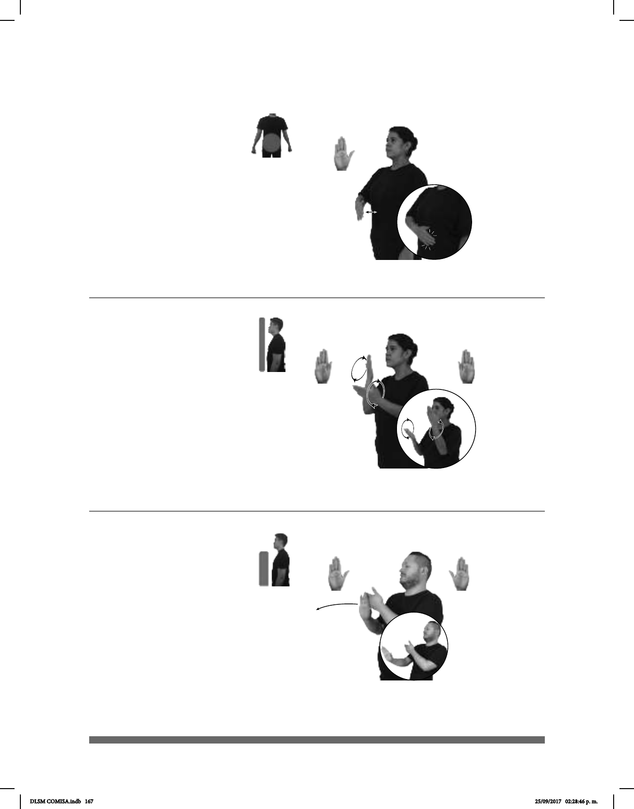

167
1
2
(B-P 169)
dm-MANUEL TENER PANZA GRANDE
Manuel tiene una gran panza.
Seña: SM
B-P.2
Palma hacia adentro.
A la altura del abdomen.
La MD golpea el plexo
repetidamente.
1. sust. m. Órgano del
aparato digestivo de muchos animales,
desde los artrópodos y los moluscos
hasta los humanos, en el cual se digiere
el alimento, con la ayuda de jugos
gástricos. 2. sust. f. (Coloq) Vientre de
los seres humanos; estómago.
(B-P 170)
pro-NOSOTROS PARA EXAMEN pro-NOSOTROS ESTUDIAR
Estudiamos para el examen.
Seña: SB
MD y MB B-P.6
MD y MB palmas hacia
adentro.
MD y MB a la altura de la
cara.
La MD y la MB se
mueven formando círculos hacia
adentro alternada y repetidamente.
Simula la acción de
leer varios libros.
v. tr. Aplicar la inteligencia
y la memoria para llegar a conocer y
entender alguna cosa.
(B-P 171)
pro-YO PERSONA NEGATIVO
área
EVITAR
Yo evito a las personas negativas.
Seña: SB
MD y MB B-P.2
MD palma hacia
afuera. MB palma hacia adentro.
A la altura del pecho.
MD delante de MB.
MD recto hacia
enfrente.
Nariz
fruncida.
v. tr. Encontrar la forma
cumplir con la obligación de hacer
algo o encontrarse con algo o alguien.
DLSM COMISA.indb 167 25/09/2017 02:28:46 p. m.